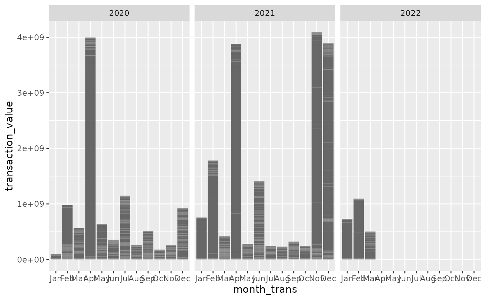

Show donors - show_donors
show_donors(year = 2020,
geo = "The Americas",
transtype = "11" )
# , ## "3" "4" "11" metric = "USD"Show implementers - show_implementers
show_implementers(year = 2020,
geo = "The Americas",
transtype = "11" )